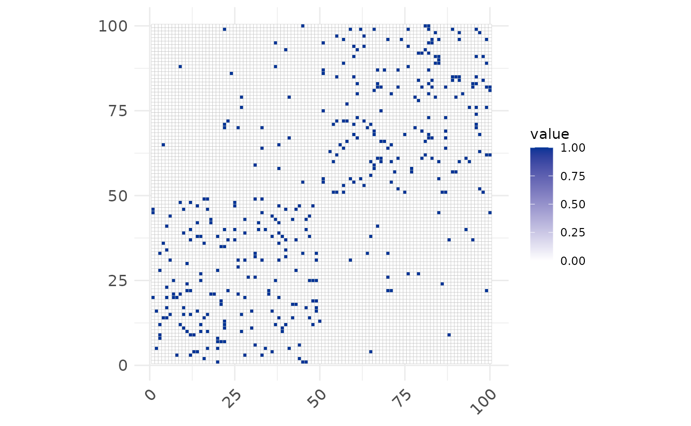
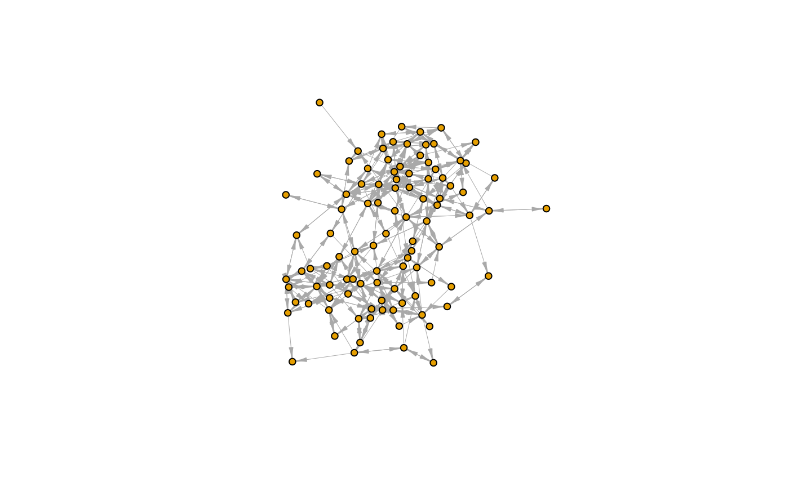
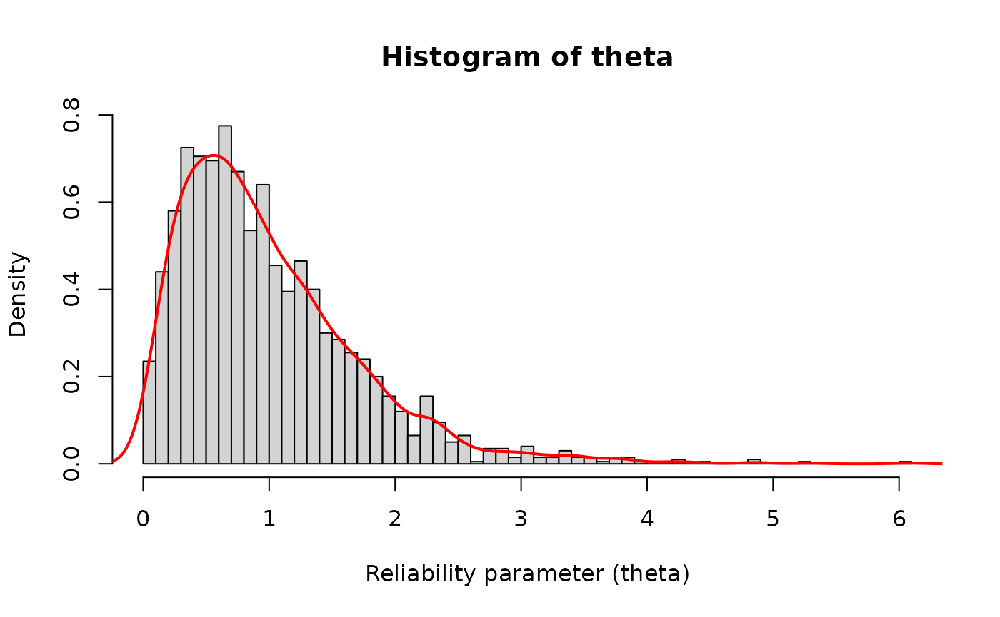
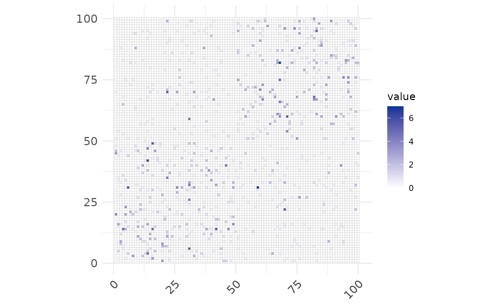
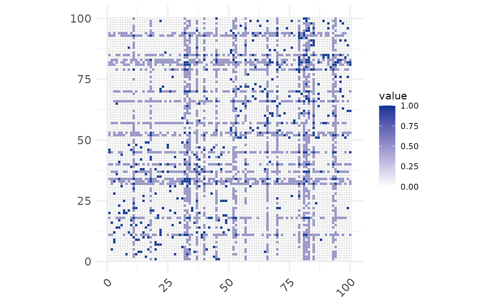
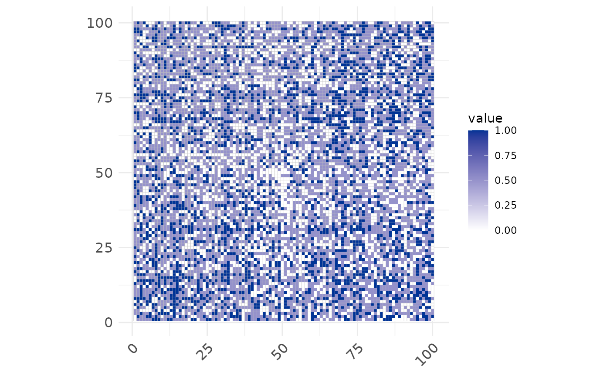
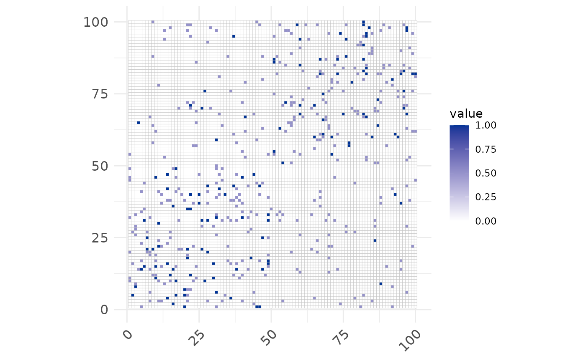

Synthetic data
synthetic.RmdThe goal of this article is to illustrate how to generate and use synthetic networks.
Generating Ground Truth Networks - Y
Simply create an object with the desired synthetic network class (more info about arguments and others synthetic models in help(gm_Multitensor)):
random_net <- gm_Multitensor(N=100, M=100, L=1, C=2, avg_degree=10, sparsify=T, eta=0.99, seed=10)
#> Loaded vimure version
Y <- extract_Y(random_net)
ggcorrplot(Y[1, ,]) +
ggplot2::scale_fill_gradient(low="white",high="#003396")
#> Scale for 'fill' is already present. Adding another scale for 'fill', which
#> will replace the existing scale.
Plot the network data:
graph <- graph_from_adjacency_matrix(Y[1, , ], mode = "directed")
graph <- set_graph_attr(graph, "layout", layout_with_fr(graph, niter=600))
plot(graph,
vertex.size=5,
vertex.label=NA,
edge.width=0.5,
edge.arrow.size=0.5,
edge.arrow.width=0.5)
Calculate some network statistics from the adjacency matrix:
Generating Observed Networks - X
Given a network Y, we can generate N observed adjacency matrices as would have been reported by reporting nodes \(m\) for \(m \in N\). This is achieved by the function build_X. Example:
‘Reliability’ parameter \(\theta\) - drawn from a gamma distribution
Nodes are not reliable and will report imperfect views of the ground truth network.
The ‘reliability’ of nodes is represented by the parameter \(\theta_{lm}\) and by default are modeled as a gamma function with shape sh_theta and scale sc_theta:
\[ \theta_{lm} \sim \Gamma(sh\_theta, sc\_theta) \]
The function build_X uses sh_theta = 2.0 and sc_theta = 0.5 by default.
build_X(random_net, sh_theta=2.0, sc_theta=0.5) # Default valuesThe distribution looks as follow:
theta <- rgamma(2000, shape = 2, scale = 0.5)
hist(theta, breaks=50, prob = T, xlab = "Reliability parameter (theta)")
lines(density(theta), col="red", lwd=2) 
This setup aims to represent ‘reliable’ reporters as having \(\theta = 1.0\). Reporters with very low \(\theta\) (\(\theta \to 0\)) will tend to under-report while those with high \(\theta\) (unbounded) will over-report their social ties.
layer <- 1
reporter_id <- 31 # Change this to view the network from the point of view of different reporters
message("Reporter ID=", reporter_id," | theta= ", random_net$theta[layer, reporter_id])
#> Reporter ID=31 | theta= 3.5318623440758
X_current <- X[layer,,,reporter_id]
X_current <- X_current[rowSums(X_current[,-1]) != 0, colSums(X_current[-1,]) != 0]
ggcorrplot( X_current) +
ggplot2::scale_fill_gradient(low="white",high="#003396")
#> Scale for 'fill' is already present. Adding another scale for 'fill', which
#> will replace the existing scale.
If we take the average of X (considering the reporter’s mask), it will look like this:
Xavg <- extract_Xavg(random_net)
ggcorrplot( Xavg[layer, ,]) +
ggplot2::scale_fill_gradient(low="white", high="#003396")
#> Scale for 'fill' is already present. Adding another scale for 'fill', which
#> will replace the existing scale.
‘Reliability’ parameter \(\theta\) - custom
Instead of drawing \(\theta\) from a Gamma distribution, one could just simply pass a list of reliability parameters per each node. It is used to simulate exaggeration scenarios (under-reporters and over-reporters).
theta_ratio <- 0.20 # percentage of reporters that are exaggerators
exaggeration_type <- "over" # exaggerators are over-reporters
custom_theta <- build_custom_theta(
random_net,
theta_ratio=theta_ratio,
exaggeration_type=exaggeration_type,
seed = 1L
)
custom_theta
#> [,1] [,2] [,3] [,4] [,5] [,6] [,7] [,8] [,9] [,10] [,11] [,12] [,13] [,14]
#> [1,] 1 1 1 1 1 1 1 1 1 1 50 1 1 1
#> [,15] [,16] [,17] [,18] [,19] [,20] [,21] [,22] [,23] [,24] [,25] [,26]
#> [1,] 1 1 1 50 1 1 1 1 1 1 1 1
#> [,27] [,28] [,29] [,30] [,31] [,32] [,33] [,34] [,35] [,36] [,37] [,38]
#> [1,] 1 1 1 1 1 50 50 50 1 1 50 1
#> [,39] [,40] [,41] [,42] [,43] [,44] [,45] [,46] [,47] [,48] [,49] [,50]
#> [1,] 1 50 1 1 1 1 50 1 1 1 1 1
#> [,51] [,52] [,53] [,54] [,55] [,56] [,57] [,58] [,59] [,60] [,61] [,62]
#> [1,] 1 50 50 1 1 1 50 1 1 1 1 1
#> [,63] [,64] [,65] [,66] [,67] [,68] [,69] [,70] [,71] [,72] [,73] [,74]
#> [1,] 1 1 1 50 1 1 1 50 1 1 1 1
#> [,75] [,76] [,77] [,78] [,79] [,80] [,81] [,82] [,83] [,84] [,85] [,86]
#> [1,] 1 1 1 1 50 1 50 50 50 1 50 1
#> [,87] [,88] [,89] [,90] [,91] [,92] [,93] [,94] [,95] [,96] [,97] [,98]
#> [1,] 1 1 1 1 1 1 50 50 1 1 1 1
#> [,99] [,100]
#> [1,] 1 1If using a custom theta, pass it to function build_X:
X_custom <- build_X(
random_net,
flag_self_reporter=T,
seed=10L,
theta=custom_theta,
cutoff_X=T
)
Xavg <- extract_Xavg(random_net)
ggcorrplot( Xavg[1, ,]) +
ggplot2::scale_fill_gradient(low="white", high="#003396")
#> Scale for 'fill' is already present. Adding another scale for 'fill', which
#> will replace the existing scale.
Mutuality Parameter \(\eta\)
In our model, we simulate double-sampled reports. The same reporter \(m\) responds about giving and receiving social support about two nodes \(i\) and \(j\). Therefore, every tie type is sampled twice for each reporter, one for each direction of the interaction: \(i \to j\) and \(j \to i\).
The mutuality parameter (\(\eta\)) models people’s propensity of naming of the same individuals across both prompts.
An example of impossibly High Mutuality on X
X_custom <- build_X(random_net, cutoff_X=T, mutuality=0.99, flag_self_reporter=T, seed=10L)
Xavg <- extract_Xavg(random_net)
ggcorrplot( Xavg[1, ,]) +
ggplot2::scale_fill_gradient(low="white", high="#003396")
#> Scale for 'fill' is already present. Adding another scale for 'fill', which
#> will replace the existing scale.
An example of NO mutuality on X (\(\eta = 0.0\))
X_custom <- build_X(random_net, cutoff_X=T, mutuality=0, flag_self_reporter=T, seed=10L)
Xavg <- extract_Xavg(random_net)
ggcorrplot( Xavg[1, ,]) +
ggplot2::scale_fill_gradient(low="white", high="#003396")
#> Scale for 'fill' is already present. Adding another scale for 'fill', which
#> will replace the existing scale.
Remember: These X adjacency matrices have all been generated for the exact same ground truth Y. One could play around with the parameters a bit further to investigate or imagine different scenarios of reporting inaccuracy.